Con 99% de tráfico orgánico y sin invertir un euro en paid.
La situación inicial — una marca poderosa con un funnel que no acompañaba
El insight — el usuario no quiere elegir una clase, quiere elegir su transformación
El quiz estratégico que eliminó la parálisis de decisión
Ejecución paso a paso, validada por datos en cada fase
Resultados confirmados por el propio cliente
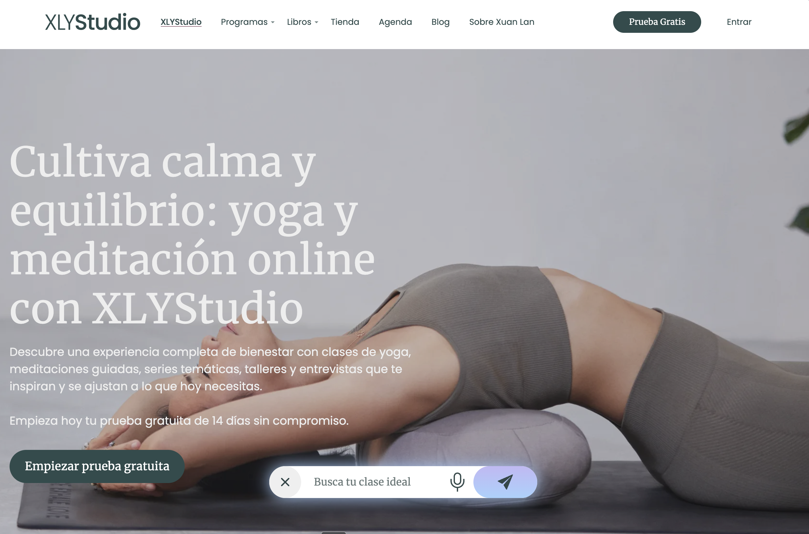
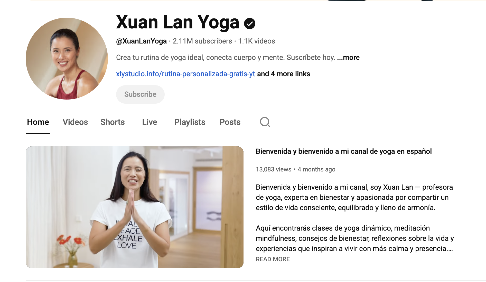
El usuario llegaba con intención… pero se encontraba con muchas clases, muchos programas, diferentes estilos, diferentes niveles…
Y una pregunta que nadie respondía:
"¿Por dónde empiezo?"
Un producto excelente… en un funnel que no lo mostraba como tal.
No una auditoría superficial.
Una auditoría de por qué el usuario no convertía.
Y lo que encontramos fue revelador.
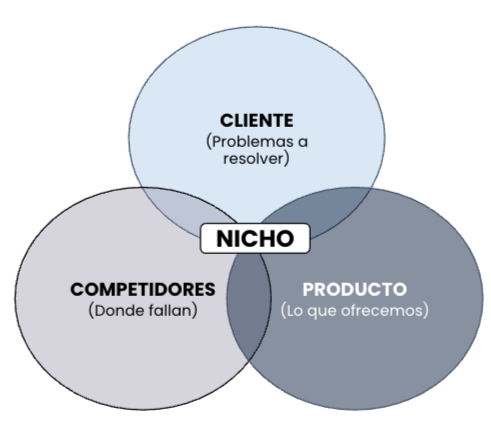
Muchas opciones. Cero dirección.
El usuario llegaba buscando reducir estrés, ganar flexibilidad, volver a moverse…
Pero lo que encontraba era:
Demasiadas opciones. Y cuando la decisión es compleja, ocurre algo predecible: la gente no decide.
El tráfico era alto. El contenido era bueno. La marca era fuerte.
Pero no había sistema que canalizara la intención.
"La decisión recaía completamente en el usuario. Y eso estaba matando la conversión."
XLY no necesitaba más tráfico.
No necesitaba más contenido.
Necesitaba dirección.
Teníamos el diagnóstico. Sabíamos el problema. Y aquí es donde todo cambió.
Reducir estrés
Ganar flexibilidad
Volver a moverse
Sentirse mejor con su cuerpo
El yoga no es un producto. Es un camino.
Y el funnel tenía que reflejar eso.
Y esto no era un cambio cualquiera. Cuando revisamos el manual de identidad de Xuan Lan, los valores eran: claridad, equilibrio, minimal, conciencia, expansión. El nuevo funnel tenía que reflejar exactamente eso.
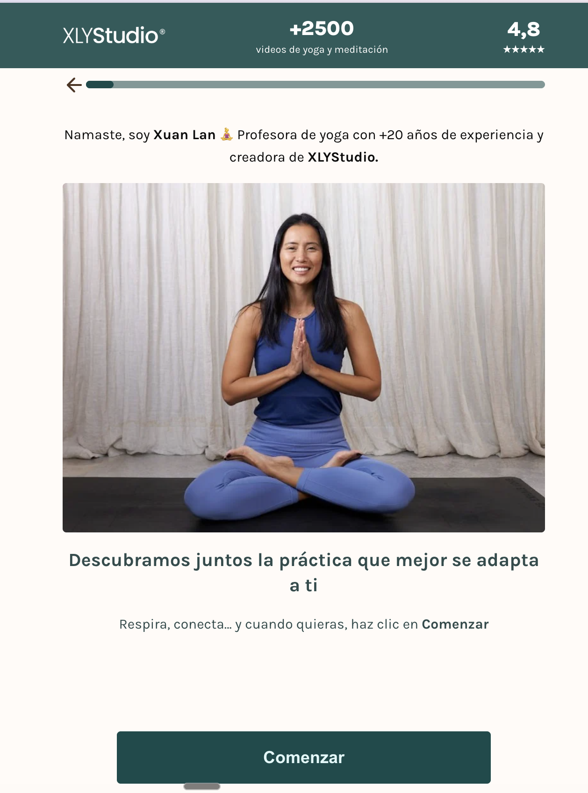
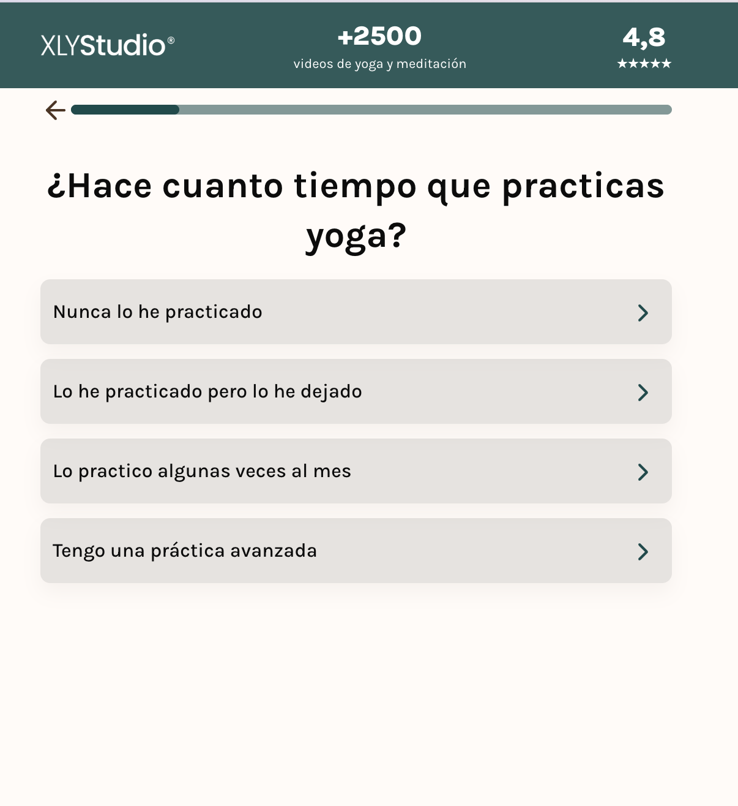
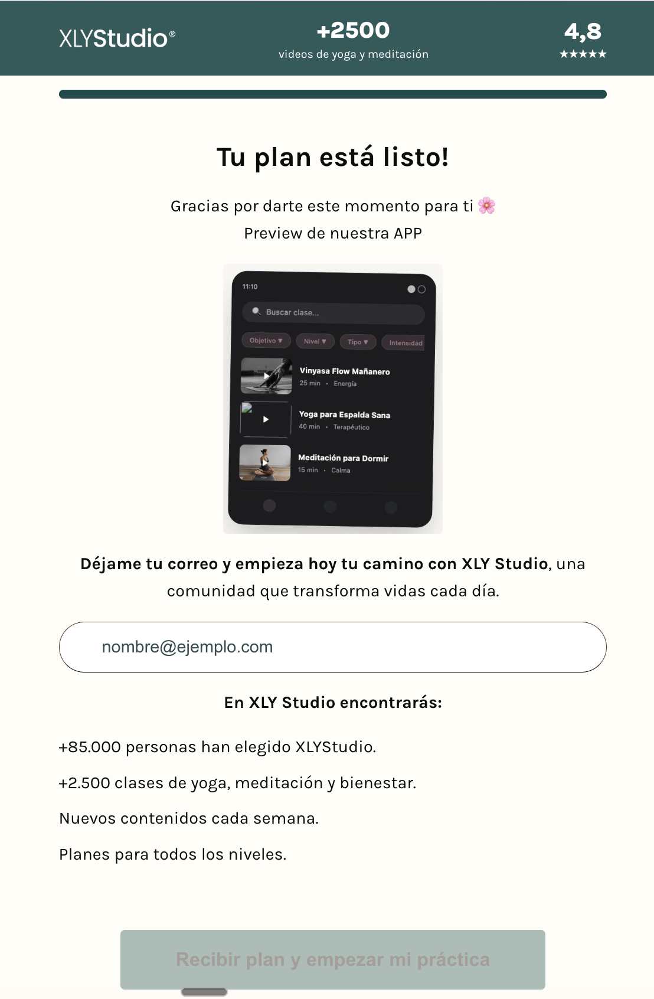
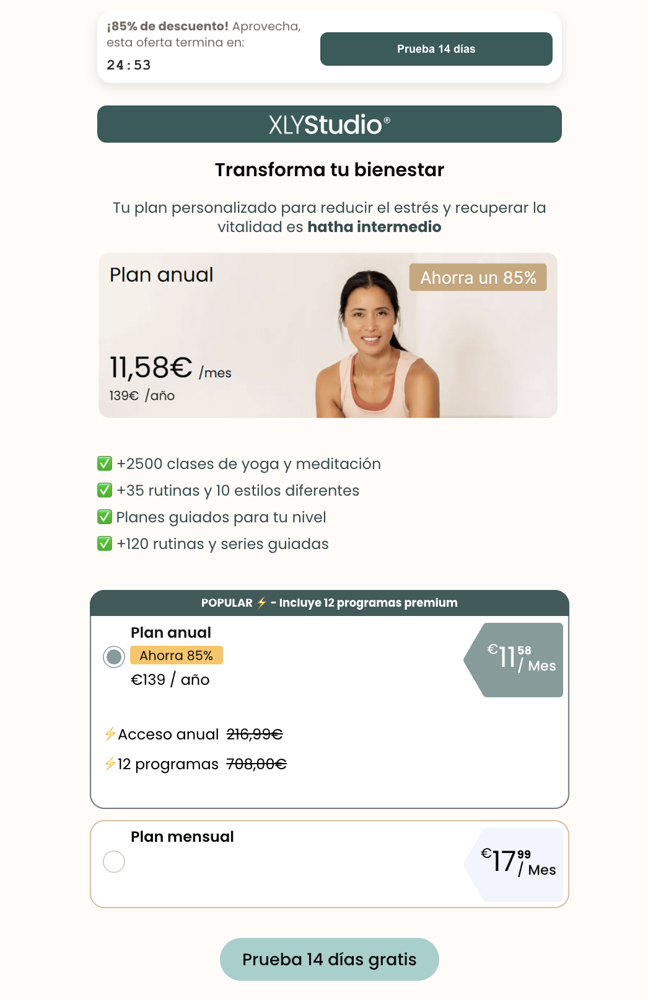
Preguntas que detectan nivel, objetivo y momento vital. Elimina la parálisis.
En lugar de opciones, muestra dirección. Acompañamiento, no presión.
Claridad, equilibrio y conciencia en cada pantalla.
Quiz + paywall en un solo flujo, sin saltos entre plataformas.
No fue un lanzamiento único. Fue una construcción secuencial donde cada paso dependía de lo que el anterior nos enseñó.
Antes de tocar nada, necesitábamos la foto exacta. Dónde entraban los usuarios, dónde se caían, qué pasaba entre la visita y el free trial. Conversión por etapa, tasa de abandono, tiempo en cada paso. Sin esta foto inicial, cualquier cambio habría sido un disparo a ciegas.
Con el diagnóstico claro, construimos la secuencia. Cada pregunta tenía un objetivo psicológico: generar compromiso progresivo, reducir la percepción de riesgo, crear la sensación de acompañamiento. El orden importaba: primero situación actual, luego objetivos, después recomendación. El objetivo no era capturar datos. Era convencer al usuario, paso a paso, de que este era su camino.
Con las preguntas definidas, montamos Web2Wave como capa de análisis. Funnel completo en tiempo real: dónde avanzaban, dónde se caían, en qué pregunta abandonaban. Tracking propio por etapa: quiz iniciado, pregunta X completada, resultado visto, registro, pago. Sin esta capa de análisis, no habríamos podido optimizar nada.
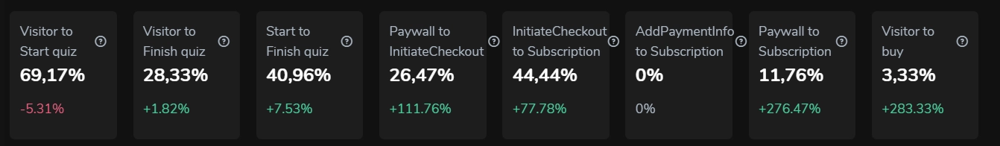
Identificamos los canales con tráfico — YouTube, blogs, SEO, redes — y a cada uno le pusimos un CTA directo al quiz. No creamos contenido nuevo. Activamos el que ya existía.
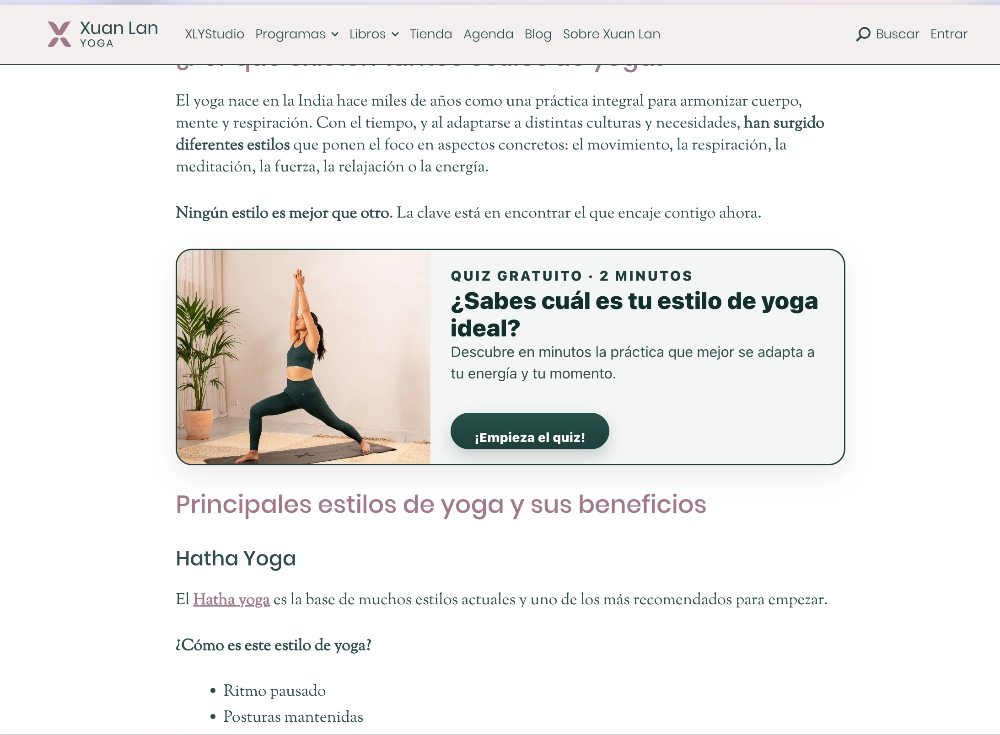
Sabíamos dónde estaba la fricción y qué preguntas funcionaban. Cada ajuste era quirúrgico: cambiar un copy, reordenar una pregunta, simplificar un paso. Las métricas dirigían.
Con un sistema que convierte de forma predecible, el siguiente paso es amplificar: activar el CRM, los emails existentes, y cuando llegue el momento, Paid Media. Primero el sistema. Después la escala.
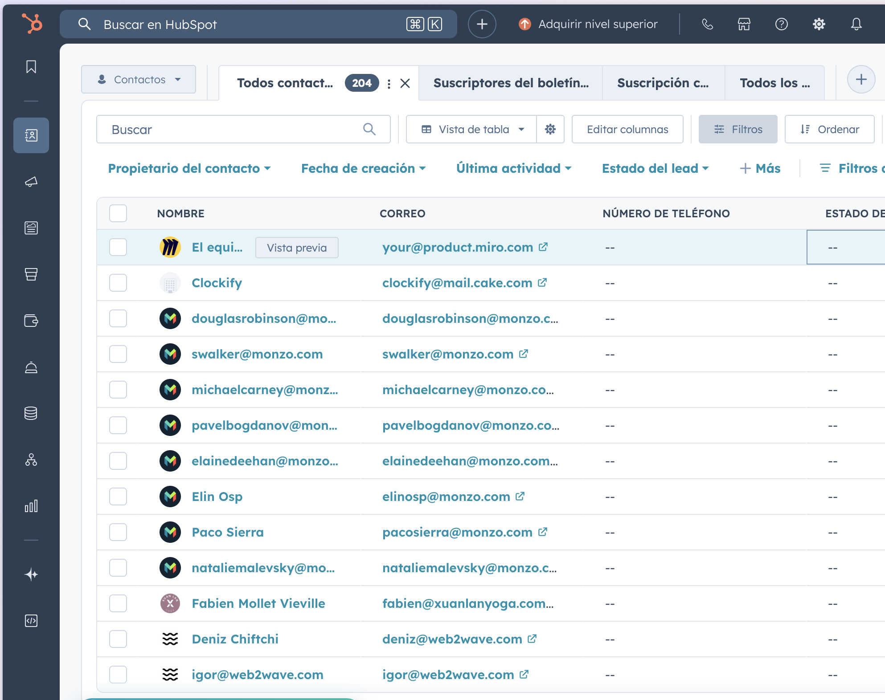
Todo medido y acompañado del CRM del cliente, optimizado por nosotros. Tags, fields, email.
Con 99% de tráfico orgánico. Sin apenas inversión en paid.
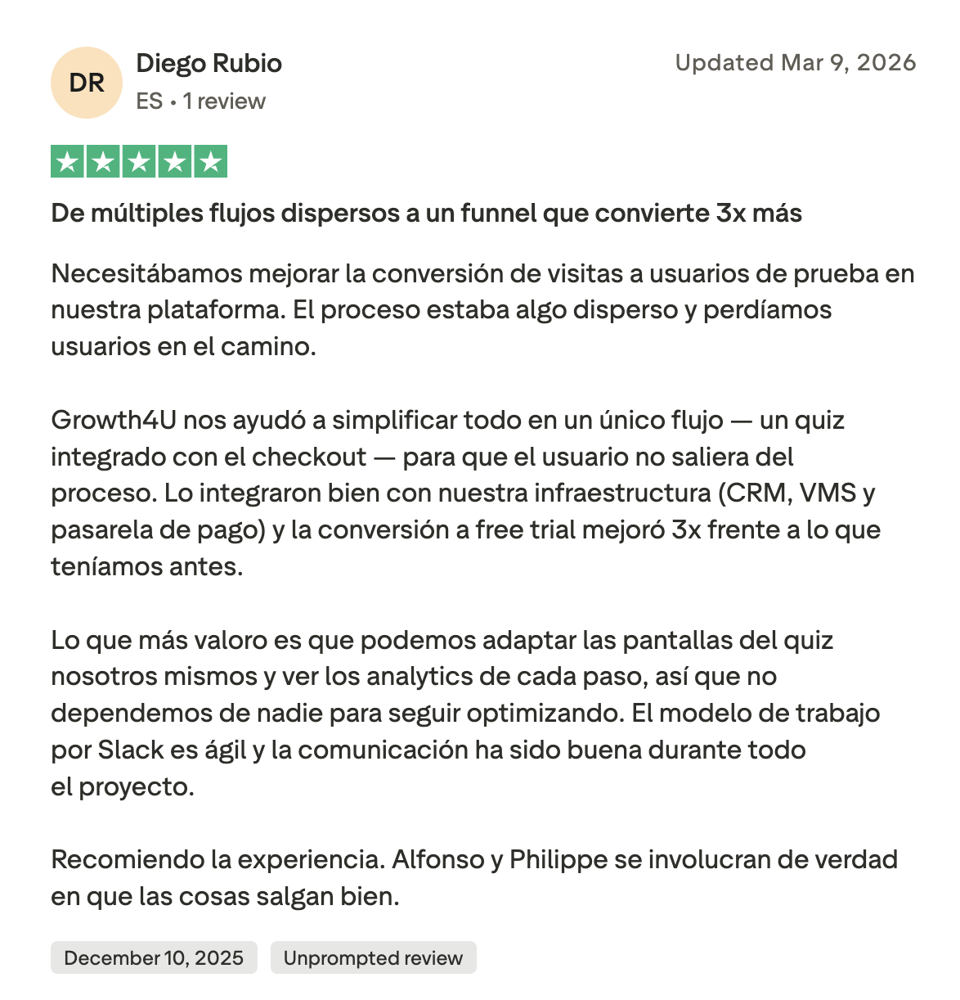
No optimizamos botones.
Optimizamos la experiencia de decisión.
Eso es el Trust Engine aplicado al wellness.
Si has llegado hasta aquí probablemente te resuenen los problemas que te he contado del cliente y te interesen las soluciones.
Es por ello que te invito a conectar conmigo y agendar una llamada para ver si cualificas para ayudarte a montar el sistema.
Growth4U Systems · Trust Engine